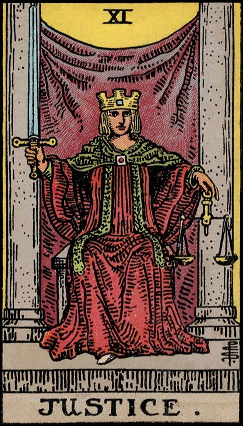

| Archetype | The Judge, Karmic Balance, Moral Integrity, Discernment |
| Psychological Role | Symbolizes accountability, discernment, and alignment of actions with inner truth |
| Ego Status | The ego becomes capable of mature reflection and ethical self-examination |
| Symbolic Number | 11 — a gateway, higher alignment, duality brought into balance |
| Shadow Aspect | Harsh judgment, self-righteousness, denial of truth, or intellectual coldness |
| Spiritual Meaning | The pursuit of truth, fairness, and karmic justice |
| Unconscious Connection | Conscious evaluation of the unconscious motivations behind one's actions |
| Journey Theme | A call to integrate personal responsibility and objective awareness |
| Jungian Goal | Alignment of the ego with the inner judge or Self; ethical individuation |